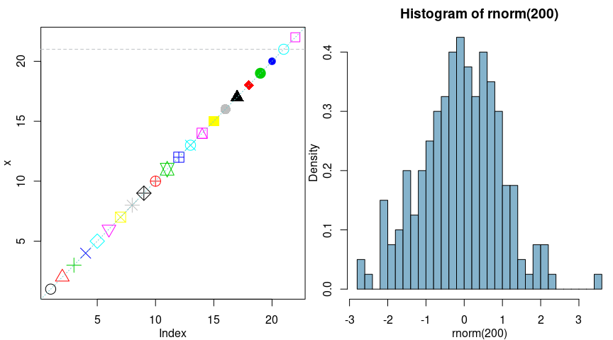
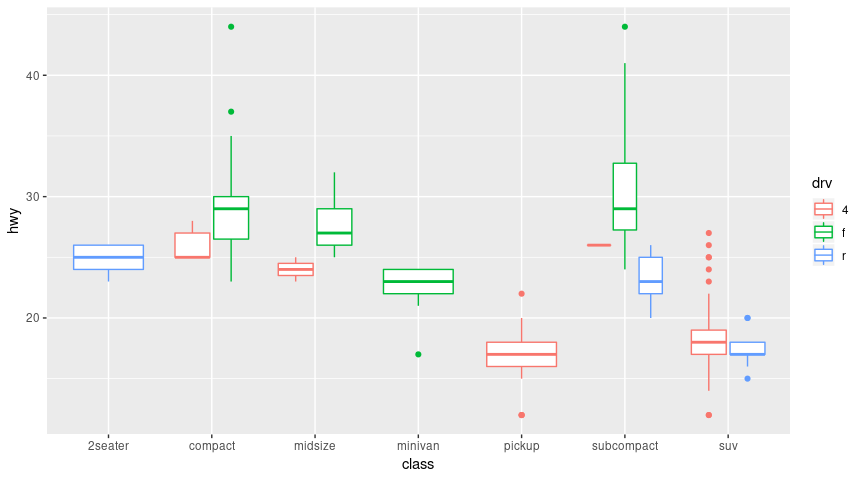
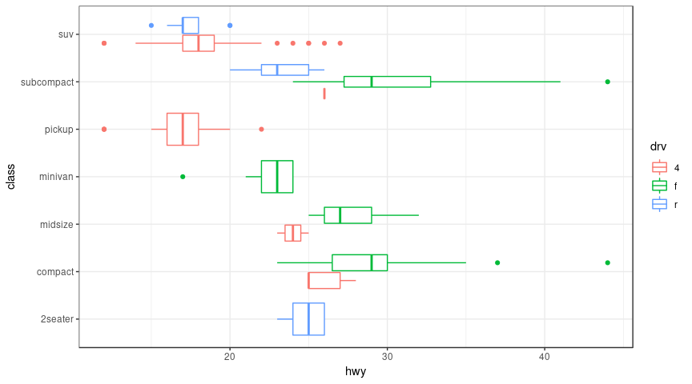
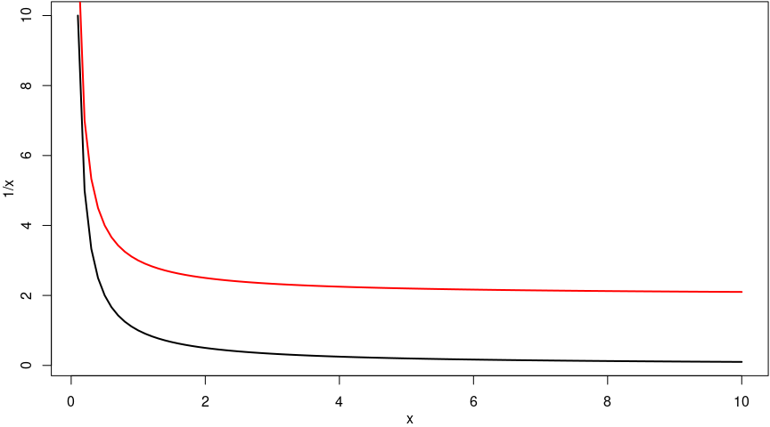

slides available at wenjie-stat.me/2018-01-19-siam/
source code of the slides and all the examples: https://github.com/wenjie2wang/2018-01-19-siam/
prerequisites: R and possibly the RStudio IDE have been installed.
R Basics
debugging tools and exception handling
performance and profiling
graphics in R
dynamic reporting with R Markdown
R Shiny applications
R is a freely available language for statistical computing and graphics (and more).
homepage: https://www.r-project.org
the Comprehensive R Archive Network (CRAN): https://cran.r-project.org
help() or ? for getting help on a specific topic (usually a function name) or package.
help.search() or ?? for fuzzy (local) search.
RSiteSearch(): http://search.r-project.org
Google, or your favorite searching engine
StackOverflow: http://stackoverflow.com/tags/r
?Arithmetic)<- or = (or ->?): (colon operator) for generating regular sequences[] for vectorsc() for combining/concatenating vectors| Homogeneous | Heterogeneous | |
|---|---|---|
| 1d | Atomic vector | List |
| 2d | Matrix | Data frame |
| nd | Array |
R does not have scalar types.
Almost all other objects are built upon these foundations.
str() (short for structure) gives a compact, human readable description of any R data structure.
dbl_var <- c(1, 2.5, 4.5) # double
int_var <- c(1L, 6L, 10L) # integer (with `L` suffix)
log_var <- c(TRUE, FALSE, T, F) # logical (avoid using `T`, `F`)
chr_var <- c("these are", "some strings") # characterNA: Not Available/missing valuesNaN: Not a NumberNULL: The null objectSome useful operators and functions for atomic vectors:
c(), vector(), length(), names(), setNames()
rep(), rep.int(), rep_len(),
seq(), seq.int(), seq_len(), seq.along(),
%in%, match(), rev(), head(), tail(), paste(), paste0()
typeof(), is.character(), as.character(), is.numeric(), as.numeric()
is.logical(), as.logical(), ...## e.g.,
x <- 1:3 # (1, 2, 3)
length(x) # 3
names(x) <- letters[x] # add names to x: "a", "b", and "c"
y <- setNames(x, LETTERS[x]) # (1, 2, 3) with names "A", "B", and "C"
names(y) # "A", "B", and "C"
y["A"] # 1 with name "A"
head(y, 2) # (1, 2) with names "A", "B"
head(y, - 1) # the same with `head(y, 2)`
y[c("B", "C")] <- c(4, 6) # y = (1, 4, 6) with names "A", "B", "C"
rev(y) # (4, 2, 1) with names "C", "B", and "A"
c("A", "B") %in% names(y) # (TRUE, TRUE)
z <- rep(letters[x], x) # z = ("a", "b", "b", "c", "c", "c")
paste0(z, 1:6) # "a1", "b2", "b3", "c4", "c5", and "c6"## Basic math functions
abs(), sign()
sin(), cos(), tan()
acos(), asin(), atan(), atan2()
ceiling(), floor(), round(), trunc(), signif()
exp(), log(), log10(), log2(), sqrt()
choose(), factorial(), combn()
union(), intersect(), setdiff(), setequal()
sum(), prod(), max(), min(), pmax(), pmin()
cummax(), cummin(), cumprod(), cumsum(), diff()
mean(), median(), cor(), sd(), var(), range()## Ordering and tabulating
duplicated(), unique()
sort(), order(), rank(), quantile()
rle(), table(), xtabs(), split(), cut()## Random variables
(d, p, q, r) + (beta, binom, cauchy, chisq, exp, f, gamma, geom,
hyper, lnorm, logis, multinom, nbinom, norm, pois, signrank, t,
unif, weibull, wilcox, birthday, tukey)e.g., rnorm() for generating random numbers following normal distribution.
a <- matrix(LETTERS[1:6], nrow = 2) # 2 x 3 matrix ("A"-"F" by columns)
dim(a) # (2, 3)
a[2] # "B"
a[1, ] # the first row
a[, 2] # the second column
a[1, 1:2] # "A" and "C"
a[rbind(c(1, 3), c(2, 1), c(2, 2))] # "E", "B", "D"
b <- array(1:12, c(2, 3, 2)) # a 2 x 3 x 2 array
dim(b) # (2, 3, 2)Some useful functions and operators:
dat <- data.frame(x = 1:3, y = c("a", "b", "c"))
dat$z <- as.character(dat$x + 10)
dat$fac_z <- factor(dat$z)
str(dat)## 'data.frame': 3 obs. of 4 variables:
## $ x : int 1 2 3
## $ y : Factor w/ 3 levels "a","b","c": 1 2 3
## $ z : chr "11" "12" "13"
## $ fac_z: Factor w/ 3 levels "11","12","13": 1 2 3class and levels
factor(), gl(), levels(), relevel(), as.factor(), is.factor()stringsAsFactors = FALSE when creating data frame or set options(stringsAsFactors = FALSE) globally for not converting character strings as factors.x <- list(1:3, "a", c(TRUE, FALSE, TRUE), c(2.3, 5.9))
names(x) <- c("foo", "bar", "alpha", "beta")
str(x)## List of 4
## $ foo : int [1:3] 1 2 3
## $ bar : chr "a"
## $ alpha: logi [1:3] TRUE FALSE TRUE
## $ beta : num [1:2] 2.3 5.9## List of 2
## $ :List of 4
## ..$ foo : int [1:3] 1 2 3
## ..$ bar : chr "a"
## ..$ alpha: logi [1:3] TRUE FALSE TRUE
## ..$ beta : num [1:2] 2.3 5.9
## $ :function (..., na.rm = FALSE)## [1] 55## List of 1
## $ :List of 1
## ..$ : list()Some commonly used functions for data frames and lists:
function_name <- function(arguments) {
## do something interesting here
## the last expression evaluated will be returned
## or explictly use return()
}## e.g.,
foo <- function(x) x + 1
bar <- function(x, y = "alpha") {
x <- x + 1
list(x = x, y = y)
}
`%+%` <- function(e1, e2) paste0(e1, e2)
"foo" %+% "bar"## [1] "foobar"## [1] 3... (ellipsis) argumentmy_plot <- function(x, y, type = "l", ...) {
plot(x, y, type = type, ...)
}
## the first function call leads to the second one
my_plot(x, y, col = "red", lty = 2)
plot(x, y, type = "l", col = "red", lty = 2)## List of 2
## $ a: chr "alpha"
## $ b: logi TRUE## list()... is also useful when the number of arguments passed to the function cannot be known in advance.## function (..., sep = " ", collapse = NULL)## function (..., file = "", sep = " ", fill = FALSE, labels = NULL, append = FALSE)... in the argument list has to be specified explicitly by the names (cannot be partially matched).## [1] "a = 2, b = 4, c = 5"## [1] 5Every environment has a parent environment except the empty environment.
Things get really interesting when we define a function inside another function.
## [1] 9## [1] 8## [1] "pow"## [1] 2## [1] "pow"## [1] 3## [1] ".GlobalEnv" "package:shiny" "package:methods"
## [4] "package:Rcpp" "package:profvis" "package:plotly"
## [7] "package:microbenchmark" "package:ggplot2" "package:fortunes"
## [10] "package:dplyr" "package:data.table" "package:bookdown"
## [13] "package:stats" "package:graphics" "package:grDevices"
## [16] "package:utils" "package:datasets" "Autoloads"
## [19] "package:base"Consider the following example:
y <- 10
f <- function(x) {
y <- 2
y ^ 2 + g(x)
}
g <- function(x) x * y # what is the value of `y` here?
f(3)g, what is the value of y?
y = 10y = 2 instead## a simple example of the if-else statement
## for some vector variable `x`
if (length(x) > 10) {
## do something here if length of x > 10
} else if (length(x) > 5) {
## do something else if length of x > 5 but <= 10
} else {
## do something else
}## a simple loop that seems to be okay
## however, it is a not necessary loop in R!
x <- 0; y <- c(4, 3, 9)
for (i in 1:3) {
x <- x + y[i]
}
x == sum(y)## [1] TRUEapply and its friends lapply, sapply, tapply, mapply, vapply, and more## function (X, MARGIN, FUN, ...)## [,1] [,2] [,3] [,4] [,5] [,6] [,7]
## 25% -0.5641935 -0.3024751 -0.6244192 -0.7630466 -0.7939067 -0.5482448 -0.314301
## 75% 0.7232730 0.4018363 0.2620994 0.7028158 0.2268176 1.0520128 0.609674
## [,8] [,9] [,10]
## 25% -0.7857089 -0.4379614 -0.6305012
## 75% 0.3416559 0.7605316 0.2541973## [1] 2.980126 3.753530 2.940508 1.275597 3.434352 3.065223 3.121876 3.334740 1.519468
## [10] 3.213754 2.586939 2.225847 2.805719 3.962351 3.701645 1.985350 4.501195 3.224448
## [19] 2.326511 3.308015## [,1] [,2]
## [1,] 0.4205324 -0.1052822
## [2,] -0.1114394 -0.1615257## [,1] [,2]
## [1,] 0.4205324 -0.1052822
## [2,] -0.1114394 -0.1615257## [,1] [,2]
## [1,] 4.205324 -1.052822
## [2,] -1.114394 -1.615257## [,1] [,2]
## [1,] 4.205324 -1.052822
## [2,] -1.114394 -1.615257lapply: loops over a vector/list and apply a function to each elementsapply: same with lapply but try to simplify the result## [[1]]
## [1] -0.07355602
##
## [[2]]
## [1] -1.1686514 -0.6347483
##
## [[3]]
## [1] -0.02884155 0.67069597 -1.65054654## [1] -0.07355602 -0.90169984 -0.33623071## 'data.frame': 50 obs. of 4 variables:
## $ Sepal.Length: num 5.1 4.9 4.7 4.6 5 5.4 4.6 5 4.4 4.9 ...
## $ Sepal.Width : num 3.5 3 3.2 3.1 3.6 3.9 3.4 3.4 2.9 3.1 ...
## $ Petal.Length: num 1.4 1.4 1.3 1.5 1.4 1.7 1.4 1.5 1.4 1.5 ...
## $ Petal.Width : num 0.2 0.2 0.2 0.2 0.2 0.4 0.3 0.2 0.2 0.1 ...## List of 4
## $ Sepal.Length: Named num [1:2] 4.8 5.2
## ..- attr(*, "names")= chr [1:2] "25%" "75%"
## $ Sepal.Width : Named num [1:2] 3.2 3.68
## ..- attr(*, "names")= chr [1:2] "25%" "75%"
## $ Petal.Length: Named num [1:2] 1.4 1.58
## ..- attr(*, "names")= chr [1:2] "25%" "75%"
## $ Petal.Width : Named num [1:2] 0.2 0.3
## ..- attr(*, "names")= chr [1:2] "25%" "75%"## Sepal.Length Sepal.Width Petal.Length Petal.Width
## 25% 4.8 3.200 1.400 0.2
## 75% 5.2 3.675 1.575 0.3## [1] 5 7 9 8 10 12## [1] FALSE FALSE TRUE## [1] 2 2 3## [,1] [,2]
## [1,] 10 30
## [2,] 20 40## [,1] [,2]
## [1,] 40 40
## [2,] 60 60## [1] 1 1 2 2 2 3 3 3 3## [1] 0.9650246 2.0756406 2.9461191 4.0227292 5.0492229 1.0267835 2.0653258 2.9877291
## [9] 3.9586323 4.7356851## [1] "No.1" "No.2" "No.3"Base R has a variety of useful functions for working with data.
two great add-on packages for working with data.frame: data.table and dplyr
x representing the group.y by group x.set.seed(123)
dat <- data.frame(x = rpois(200, lambda = 5),
y = round(runif(200, max = 10)))
str(dat)## 'data.frame': 200 obs. of 2 variables:
## $ x: int 4 7 4 8 9 2 5 8 5 5 ...
## $ y: num 2 10 6 5 4 9 4 3 2 2 ...res_1 <- with(dat, by(y, x, sum)) # `base::by`
res_2 <- with(dat, tapply(y, x, sum)) # `base::tapply`
res_3 <- aggregate(y ~ x, data = dat, FUN = sum) # `stats::aggregate`
res_4 <- xtabs(y ~ x, data = dat) # `stats::xtabs`
suppressMessages(library(plyr)) # `plyr::ddply`
res_5 <- ddply(dat, "x", summarise, sum = sum(y))
suppressMessages(library(dplyr)) # dplyr package
res_6 <- dat %>% group_by(x) %>% summarise(sum = sum(y))
suppressMessages(library(data.table)) # data.table package
dat <- as.data.table(dat)
res_7 <- dat[, .(sum = sum(y)), keyby = x]The package ecosystem is one of the reasons that makes R so great!
too many packages? check out the task view: https://cran.r-project.org/web/views/
## [1] 3.871201try(): allows execution to continue even after an error has occurredtryCatch(): a general tool for handling conditions in addition to errorswithCallingHandlers(): a variant of tryCatch(), rarely neededbar <- function(x) {
res <- tryCatch(as.numeric(x), warning = function(w) w)
if ("warning" %in% class(res)) x else res
}
str(bar("123"))## num 123## chr "abc"mat.mat <- matrix(rnorm(200), nrow = 10)
a <- vector(mode = "numeric", length = nrow(mat))
for (i in 1:nrow(mat)) a[i] <- sum(mat[i, ]) # 1. using a for loop
a## [1] 7.4389886 -0.6842283 3.0934989 -1.3245809 3.6883585 3.3878318 -2.9784455
## [8] -6.0472031 1.5152872 0.3347129## [1] 7.4389886 -0.6842283 3.0934989 -1.3245809 3.6883585 3.3878318 -2.9784455
## [8] -6.0472031 1.5152872 0.3347129## [1] 7.4389886 -0.6842283 3.0934989 -1.3245809 3.6883585 3.3878318 -2.9784455
## [8] -6.0472031 1.5152872 0.3347129library(microbenchmark)
microbenchmark(
"for loop" = { a <- vector(mode = "numeric", length = nrow(mat));
for (i in 1:nrow(mat)) a[i] <- sum(mat[i, ]) },
"apply" = apply(mat, 1, sum),
"rowSums" = rowSums(mat),
times = 200, unit = "relative"
)## Unit: relative
## expr min lq mean median uq max neval cld
## for loop 509.269580 410.2903 255.181686 227.913516 202.92572 68.439475 200 b
## apply 6.432437 5.6705 4.206034 3.298338 4.20009 1.240729 200 a
## rowSums 1.000000 1.0000 1.000000 1.000000 1.00000 1.000000 200 aThe R session information for benchmarking is given below.
## R version 3.4.4 (2018-03-15)
## Platform: x86_64-pc-linux-gnu (64-bit)
## Running under: Arch Linux
##
## Matrix products: default
## BLAS: /usr/lib/libblas.so.3.8.0
## LAPACK: /usr/lib/liblapack.so.3.8.0
##
## locale:
## [1] LC_CTYPE=en_US.utf8 LC_NUMERIC=C LC_TIME=en_US.utf8
## [4] LC_COLLATE=en_US.utf8 LC_MONETARY=en_US.utf8 LC_MESSAGES=en_US.utf8
## [7] LC_PAPER=en_US.utf8 LC_NAME=C LC_ADDRESS=C
## [10] LC_TELEPHONE=C LC_MEASUREMENT=en_US.utf8 LC_IDENTIFICATION=C
##
## attached base packages:
## [1] methods stats graphics grDevices utils datasets base
##
## other attached packages:
## [1] plyr_1.8.4 shiny_1.0.5 Rcpp_0.12.15 profvis_0.3.5
## [5] plotly_4.7.1 microbenchmark_1.4-4 ggplot2_2.2.1 fortunes_1.5-4
## [9] dplyr_0.7.4 data.table_1.10.4-3 bookdown_0.7
##
## loaded via a namespace (and not attached):
## [1] revealjs_0.9 zoo_1.8-1 xfun_0.1 purrr_0.2.4
## [5] splines_3.4.4 lattice_0.20-35 colorspace_1.3-2 htmltools_0.3.6
## [9] viridisLite_0.3.0 yaml_2.1.16 survival_2.41-3 rlang_0.2.0
## [13] pillar_1.1.0 glue_1.2.0 bindrcpp_0.2 multcomp_1.4-8
## [17] bindr_0.1 stringr_1.3.0 munsell_0.4.3 gtable_0.2.0
## [21] htmlwidgets_1.0 mvtnorm_1.0-7 codetools_0.2-15 evaluate_0.10.1
## [25] knitr_1.20 httpuv_1.3.5 TH.data_1.0-8 xtable_1.8-2
## [29] scales_0.5.0 backports_1.1.2 jsonlite_1.5 mime_0.5
## [33] digest_0.6.15 stringi_1.1.6 grid_3.4.4 rprojroot_1.3-2
## [37] tools_3.4.4 sandwich_2.4-0 magrittr_1.5 lazyeval_0.2.1
## [41] tibble_1.4.2 tidyr_0.8.0 pkgconfig_2.0.1 MASS_7.3-49
## [45] Matrix_1.2-12 assertthat_0.2.0 rmarkdown_1.8 httr_1.3.1
## [49] R6_2.2.2 compiler_3.4.41:length(vec) vs. seq_along(vec)vec <- rnorm(50)
stopifnot(all.equal(1:length(vec), seq_along(vec)))
microbenchmark(1:length(vec), seq_along(vec),
times = 1e3, unit = "relative")## Unit: relative
## expr min lq mean median uq max neval cld
## 1:length(vec) 1.567742 1.649103 1.534697 1.585778 1.539155 1.074651 1000 b
## seq_along(vec) 1.000000 1.000000 1.000000 1.000000 1.000000 1.000000 1000 a1:n vs. seq_len(n)stopifnot(all.equal(1:100, seq_len(100)))
microbenchmark(1:100, seq_len(100), times = 1e3, unit = "relative")## Unit: relative
## expr min lq mean median uq max neval cld
## 1:100 1.434783 1.353846 1.211488 1.272997 1.219895 0.8063325 1000 b
## seq_len(100) 1.000000 1.000000 1.000000 1.000000 1.000000 1.0000000 1000 at(mat1) %*% mat1 vs. crossprod(mat1)mat1 <- matrix(rnorm(1e4), 1e2)
stopifnot(all.equal(mat1 %*% t(mat1), tcrossprod(mat1)))
microbenchmark(t(mat1) %*% mat1, crossprod(mat1), unit = "relative")## Unit: relative
## expr min lq mean median uq max neval cld
## t(mat1) %*% mat1 2.068901 2.034417 2.121033 2.041875 2.194208 3.642643 100 b
## crossprod(mat1) 1.000000 1.000000 1.000000 1.000000 1.000000 1.000000 100 amat1 %*% t(mat1) vs. tcrossprod(mat1)stopifnot(all.equal(mat1 %*% t(mat1), tcrossprod(mat1)))
microbenchmark(mat1 %*% t(mat1), tcrossprod(mat1), unit = "relative")## Unit: relative
## expr min lq mean median uq max neval cld
## mat1 %*% t(mat1) 1.896281 1.855674 1.891234 1.879163 1.870892 3.561835 100 b
## tcrossprod(mat1) 1.000000 1.000000 1.000000 1.000000 1.000000 1.000000 100 at(mat1) %*% mat2 vs. crossprod(mat1, mat2)mat2 <- matrix(rnorm(1e4), 1e2)
stopifnot(all.equal(t(mat1) %*% mat2, crossprod(mat1, mat2)))
microbenchmark(t(mat1) %*% mat2, crossprod(mat1, mat2), unit = "relative")## Unit: relative
## expr min lq mean median uq max neval cld
## t(mat1) %*% mat2 1.061678 1.085385 1.092117 1.087051 1.131448 0.5650585 100 b
## crossprod(mat1, mat2) 1.000000 1.000000 1.000000 1.000000 1.000000 1.0000000 100 amat1 %*% t(mat2) vs. tcrossprod(mat1, mat2)stopifnot(all.equal(mat1 %*% t(mat2), tcrossprod(mat1, mat2)))
microbenchmark(mat1 %*% t(mat2), tcrossprod(mat1, mat2), unit = "relative")## Unit: relative
## expr min lq mean median uq max neval cld
## mat1 %*% t(mat2) 1.034565 1.037275 1.05693 1.028481 1.047323 2.210879 100 b
## tcrossprod(mat1, mat2) 1.000000 1.000000 1.00000 1.000000 1.000000 1.000000 100 aany(is.na(x)) vs. anyNA(x)x <- 1:1e4; x[5e3] <- NaN # coerces x to be double
stopifnot(all.equal(any(is.na(x)), anyNA(x)))
microbenchmark(any(is.na(x)), anyNA(x), unit = "relative")## Unit: relative
## expr min lq mean median uq max neval cld
## any(is.na(x)) 5.337361 5.371203 5.6475 5.341983 5.3265 20.68088 100 b
## anyNA(x) 1.000000 1.000000 1.0000 1.000000 1.0000 1.00000 100 aapply vs. rowSums (rowMeans, colSums, colMeans)stopifnot(all.equal(apply(mat1, 2, mean), colMeans(mat1)))
microbenchmark(apply(mat1, 2, mean), colMeans(mat1), unit = "relative")## Unit: relative
## expr min lq mean median uq max neval cld
## apply(mat1, 2, mean) 42.90425 41.0403 31.74537 36.29913 25.37704 68.62862 100 b
## colMeans(mat1) 1.00000 1.0000 1.00000 1.00000 1.00000 1.00000 100 amicrobenchmark(
"by" = with(dat, by(y, x, sum)),
"tapply" = with(dat, tapply(y, x, sum)),
"aggregate" = aggregate(y ~ x, data = dat, FUN = sum),
"xtabs" = xtabs(y ~ x, data = dat),
"ddply" = ddply(dat, "x", summarise, sum = sum(y)),
"dplyr" = dat %>% group_by(x) %>% summarise(sum = sum(y)),
"data.table" = dat[, .(sum = sum(y)), keyby = x],
times = 1e3, unit = "relative"
)## Unit: relative
## expr min lq mean median uq max neval cld
## by 3.840108 3.781034 3.462978 3.586863 3.216732 1.478090 1000 b
## tapply 1.000000 1.000000 1.000000 1.000000 1.000000 1.000000 1000 a
## aggregate 7.237326 7.210388 6.763582 7.142968 6.420644 1.914705 1000 d
## xtabs 5.406453 5.439945 5.182376 5.476047 4.987239 1.564497 1000 c
## ddply 22.748202 22.080111 20.367626 20.675366 18.096151 58.834953 1000 e
## dplyr 5.224383 6.000011 5.971183 5.894329 5.285228 28.702014 1000 cd
## data.table 3.148850 3.535590 3.332793 3.579980 3.160607 1.413875 1000 bC/Fortran: .Call(), .C, .Fortran, dyn.load(), …
C++: inline, Rcpp, RcppArmadillo, …
Julia: XRJulia, JuliaCall, …
Python: XRPython, reticulate, …
MATLAB: R.matlab, …
…
library(Rcpp)
sourceCpp("src/aggregateSum.cpp") # available at the source repository
res_8 <- with(dat, aggregateSum(y, x))
microbenchmark(
"tapply" = with(dat, tapply(y, x, sum)),
"rcpp_wi_names" = with(dat, aggregateSum(y, x)),
"rcpp_wo_names" = with(dat, aggregateSum(y, x, addNames = FALSE)),
times = 1e3, unit = "relative"
)## Unit: relative
## expr min lq mean median uq max neval cld
## tapply 8.957147 8.799673 8.790180 8.521680 8.436642 51.66355 1000 c
## rcpp_wi_names 3.540774 3.444513 3.487307 3.346194 3.286836 30.28195 1000 b
## rcpp_wo_names 1.000000 1.000000 1.000000 1.000000 1.000000 1.00000 1000 a## a simple example of using base plotting system
par(mfrow = c(1, 2), mgp = c(2, 1, 0), mar = c(3, 3, 2, 0.1))
x <- 1:22; plot(x, pch = x, col = x, cex = 2)
abline(a = 0, b = 1, lty = 3, col = "#64C7C9")
abline(h = 21, col = "#BDC0C3", lty = 2)
hist(rnorm(200), breaks = 30, col = "#85B3CC", freq = FALSE)
## example boxplots of using ggplot2
library(ggplot2)
p <- ggplot(mpg, aes(class, hwy))
(p1 <- p + geom_boxplot(aes(colour = drv)))

.Rnw (R + LaTeX).Rmd (R + Markdown)
##
## As Obi-Wan Kenobi may have said in Star Wars: "Use the source, Luke!"
## -- Barry Rowlingson (answering a question on the documentation of some implementation
## details)
## R-devel (January 2010)The source code is real. The objects are realizations of the source code.
library("shiny")
ui <- fluidPage(
titlePanel("Hello Shiny!"),
sidebarLayout(
sidebarPanel(sliderInput("bins", "Number of bins:",
min = 1, max = 50, value = 30)),
mainPanel(plotOutput("distPlot"))
)
)
server <- function(input, output) {
output$distPlot = renderPlot({
x = faithful[, 2]
bins = seq(min(x), max(x), length.out = input$bins + 1)
hist(x, breaks = bins, col = 'darkgray', border = 'white')
})
}
shinyApp(ui = ui, server = server)